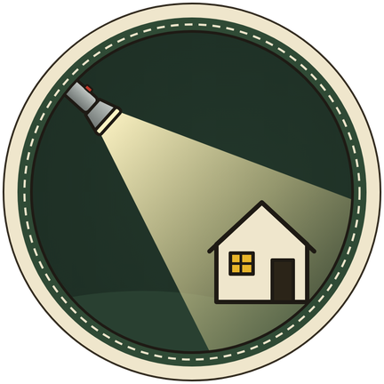

NIGHT SHIFT ← ARCHIVE동네 괴담을 수집하는 중학교 향토사 동아리. 무전기를 챙기고, 해가 지기 전에 돌아올 것.
1987년 가을, 메인주 뱅고어. 브라이어우드 중학교 향토사 동아리의 다섯 아이는 스스로를 나이트 시프트라고 부른다. 할로윈 특집 책자 『우리 동네에서 절대 하면 안 되는 일』을 만들기 위해 동네 목격담을 모으는 중이다.
학교 제보함에는 분실물 항의부터 설명할 수 없는 만남까지 온갖 쪽지가 들어온다. 그리고 동네에서 가장 우스운 금기 몇 개는, 진짜 존재를 가리키고 있었다.
블랙 먼데이 다음 날. 학교, 동아리 활동, 가족과 이웃이 먼저이고, 기묘한 일은 배경에 머문다.
축제와 책자 준비로 목격담이 늘어나고, 10월 31일이 다가올수록 사건이 움직이기 시작한다.
열두 살에서 열네 살. 숙제, 허락서, 용돈, 통금, 태워줄 어른이 늘 계획을 가로막는다. 무전기 호출부호는 정해져 있다.
동아리 회장. 인터뷰를 짜고 계획을 세운다.
장비·무전 담당. 개조 라디오 '크리퍼 미터'의 주인.
민담 수집과 녹음 담당.
기록, 사진, 지도 담당.
동네 탐문과 현장 지원 담당.
언어와 모드, 관계를 고르고 오프닝을 미리 본 뒤 확정합니다. 오른쪽 토글로 지도와 무전 표시 방식을 바꿔볼 수 있습니다.
응답마다 맨 아래에 지도 기록이 붙습니다. 같은 위치의 기록은 핀 하나로 묶입니다. 지도에서 장소를 누르면 그곳의 모습과 설명이 열립니다.
들리는 대로만 표시됩니다. 수신 상태는 맑음 · 잡음 · 끊김 세 가지이고, 목소리의 주인은 확인된 사람만 이름이 붙습니다.